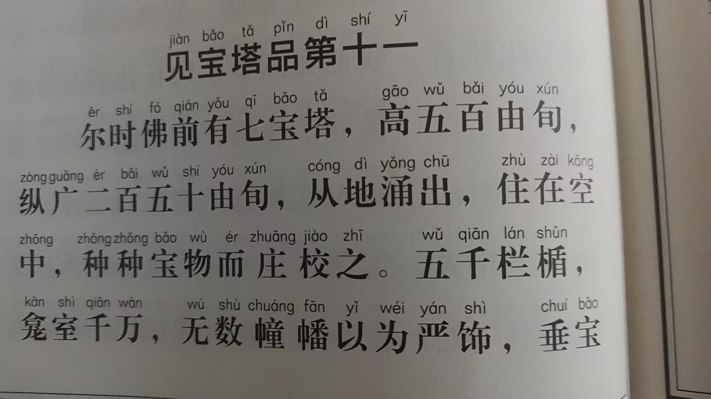
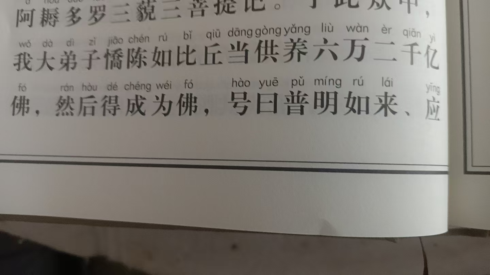
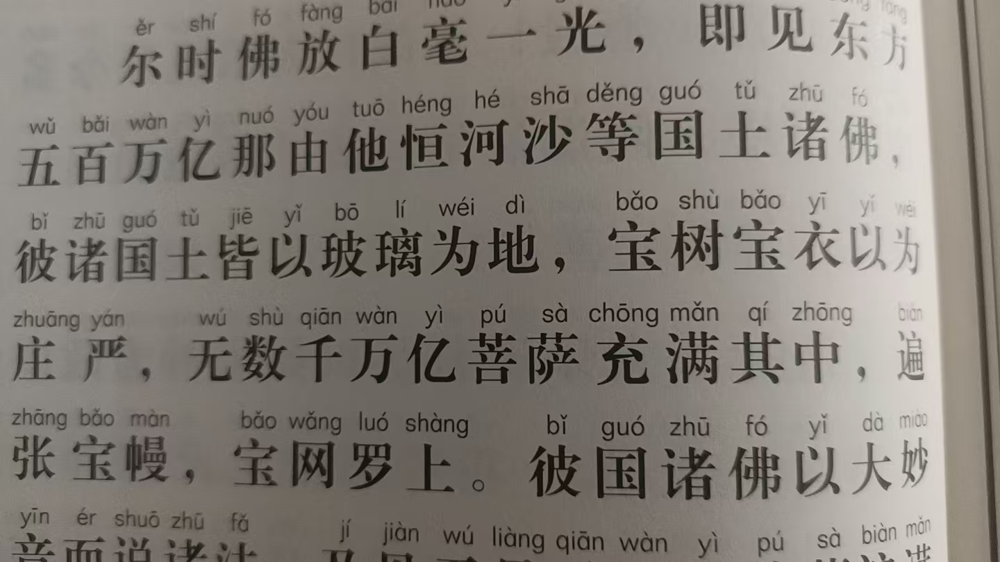
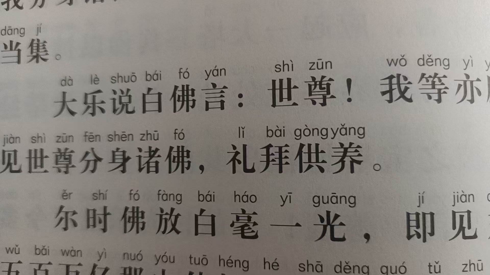
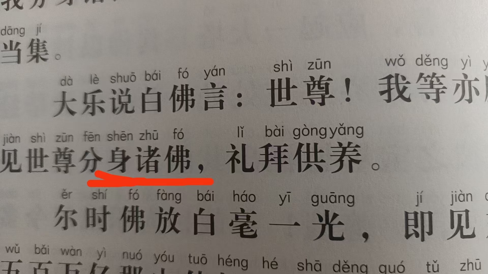
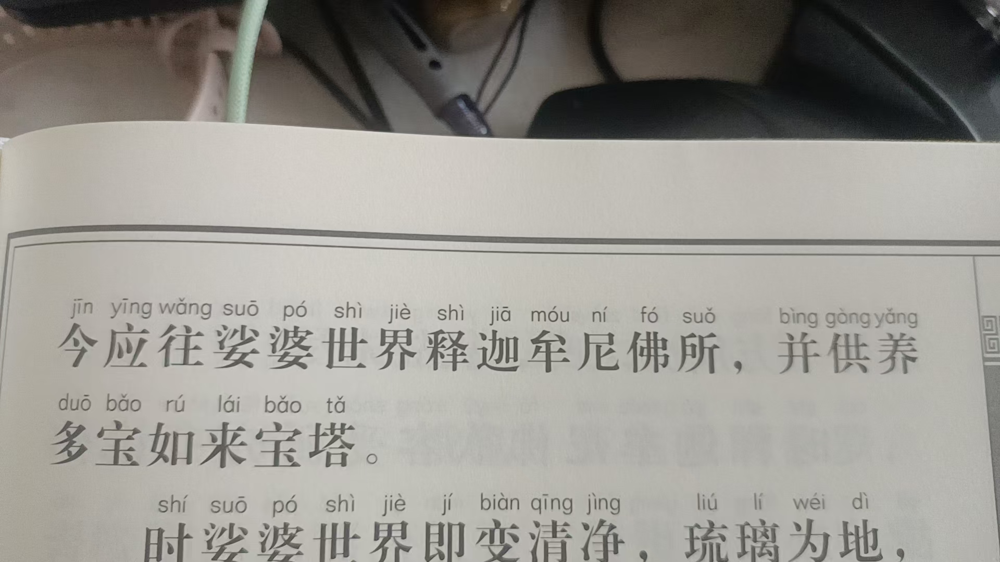
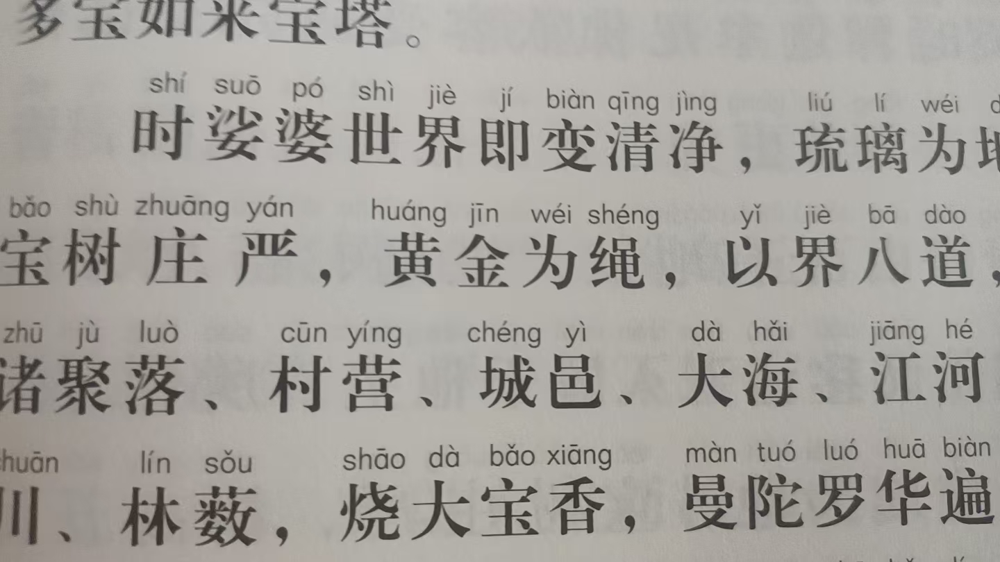
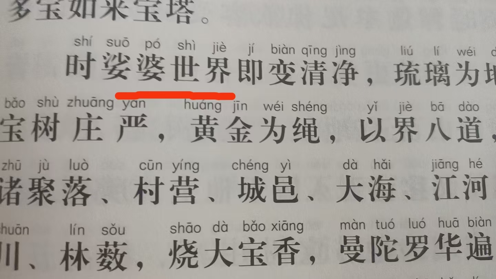
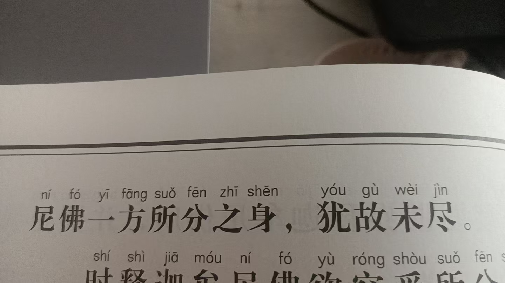
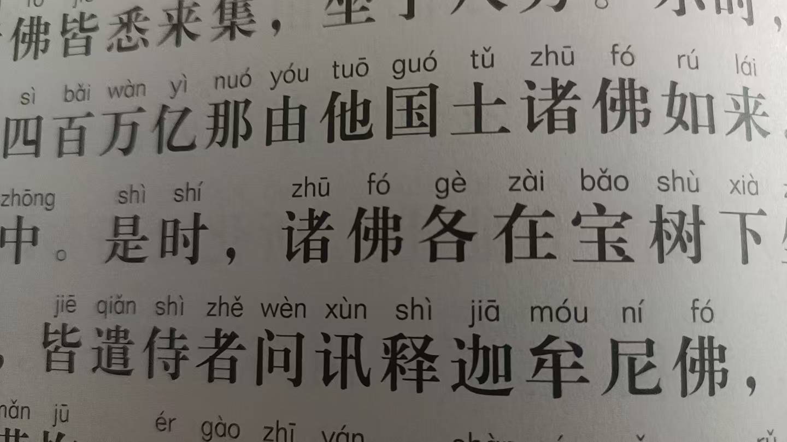

20260703心法 大心大相
修炼修行
又是心法
大心大相
玄妙心
再一个，经里能知道过去佛的名字，未来佛的名字
这也是一种超能力
应该修出来
阿难尊者，来世当做佛号…

大弟子骄陈如
来世佛号普明如来
[呲牙][呲牙][呲牙]突然有想法
我去问塔中如来，我所讲法是最完美的正法不
塔里出声音，不，不也
[呲牙][呲牙][呲牙]

太妙了



十方佛都来释迦牟尼佛所，供养多宝如来宝塔
心法里，这里的释迦牟尼应该是自己


这里的娑婆世界
在现世修炼中，是自己的佛国世界
从开始的两米光球
越修范围越广大
下几句是如何建造自己的佛国

遍满三千大千世界这么多佛，都来了
还不及释迦牟尼佛一方所分之身
犹故未尽
这才一方
释迦牟尼分身到底有多大
东西南北四方，上下四维
玄妙，绝妙
前四十年，我只修各层次分身化身
树高五百由旬
啥意思，五千公里
修大心大相
至大无垠
我讲的没错
[呲牙][呲牙][呲牙][呲牙]
我讲的修的都是皮毛，相差甚远
枝叶花果次第庄严
大相中有细密
切换自如
妙啊妙啊

四百万亿那由他
诸佛如来
四百万亿乘以十的六十次方
这么多佛，以我为中心
光光相照
我的光芒多大
这是我读经，读的同时，看到的景象
读一次，就等于修了一次
这境界，真的能成佛
妙啊妙啊
经王
开悟的愣严
成佛的法华
富贵的华严
我只是讲到了至大无垠，至小无内的方法
分身化身好多还没开始修
怎么去至大无垠
分身几个，几十个
差的太远了
拉手是入门
九转五行是基础
开悟，心法，那才是真修行
别拿着九转五行一天打四五小时就知足了
还没有时间打坐修炼，
忙什么
打工劳作，教学
都是人间妄相
有为法
到头来终是空
还得感恩这些同学们，从东林寺带回法华经
想想佛家，管吃管住，还公益这么多
不火都不行
北京老杨又看到我放光了
他是眼功第一
我说的放光是真的放出
真读经
这就是至大无垠的详细修法
说出了怎么成就佛果
果然是成佛的法华
跟地藏菩萨成就一样一样的
开悟的楞严，成佛的法华，
富贵的华严，度亡的地藏。
这就确定了成佛的方法
就是分身化身，最后汇聚，立地成佛